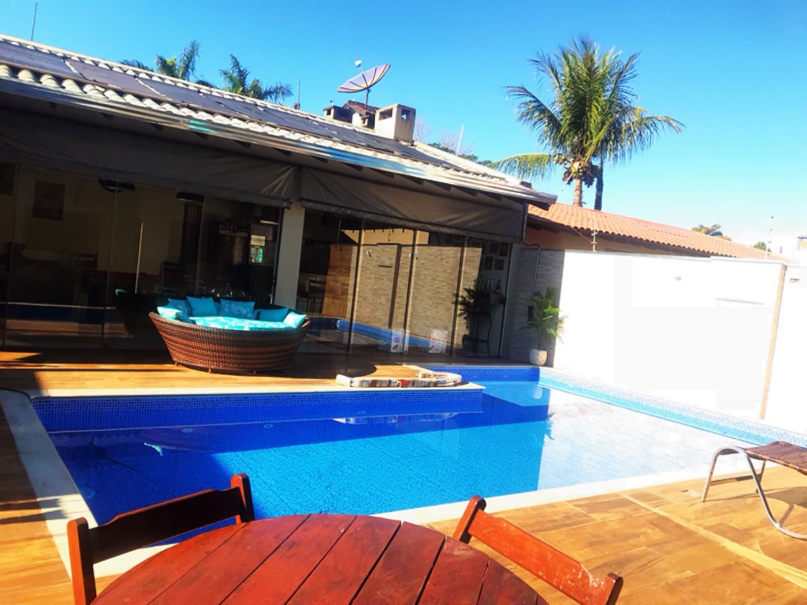
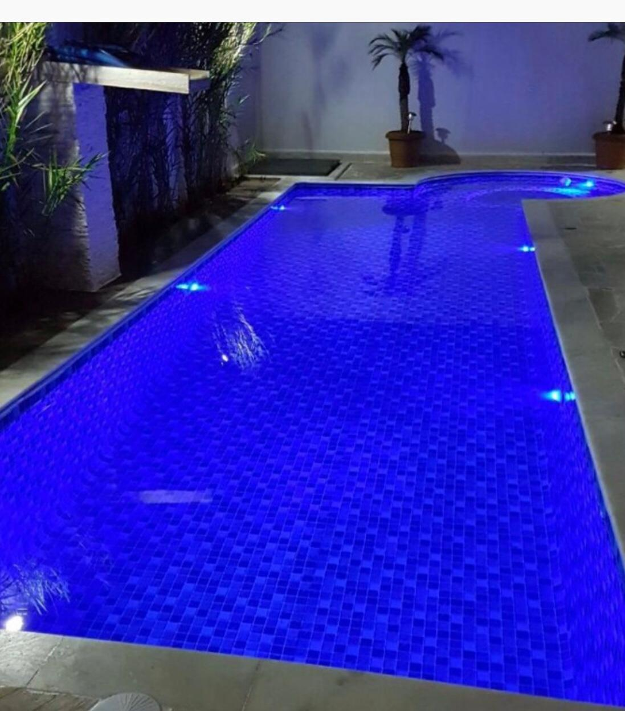
Dourados · Mato Grosso do Sul
Piscinas, pisos e revestimentos para transformar sua área de lazer em um espaço pensado para ser vivido.
PISCINAS
Fibra, vinil ou azulejo. A escolha muda o caminho do projeto, mas o objetivo é o mesmo: criar um espaço que funcione para a sua casa.


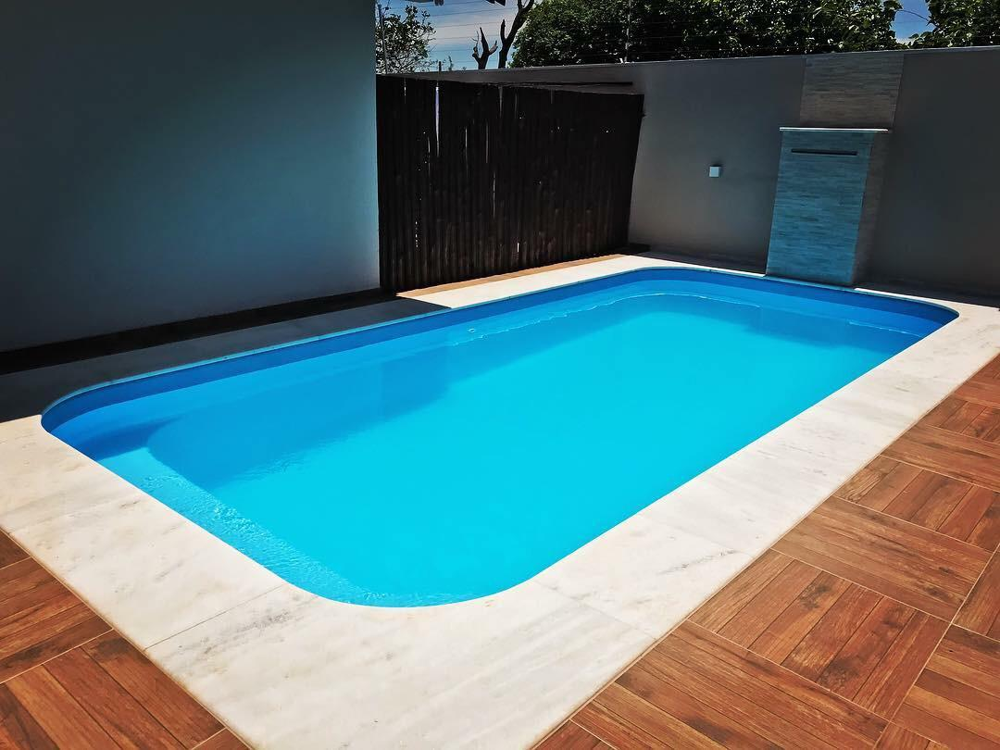
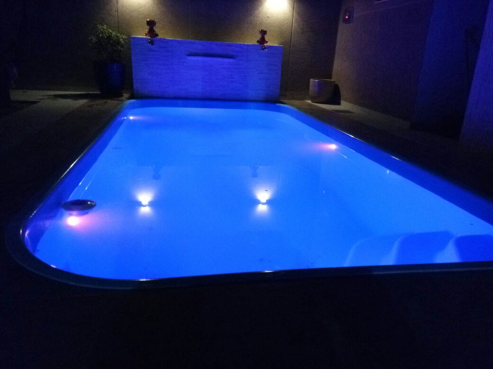
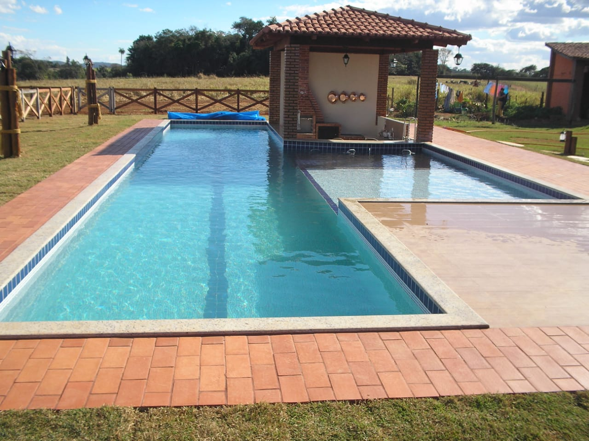
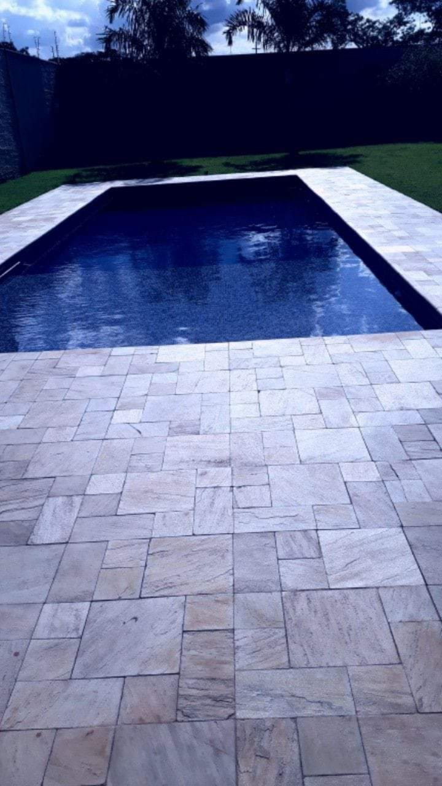
PISOS & REVESTIMENTOS
Pisos, revestimentos e acabamentos que completam a área de lazer e ajudam o ambiente inteiro a conversar.
Superfícies que conectam circulação, piscina e convivência sem deixar o projeto parecer incompleto.
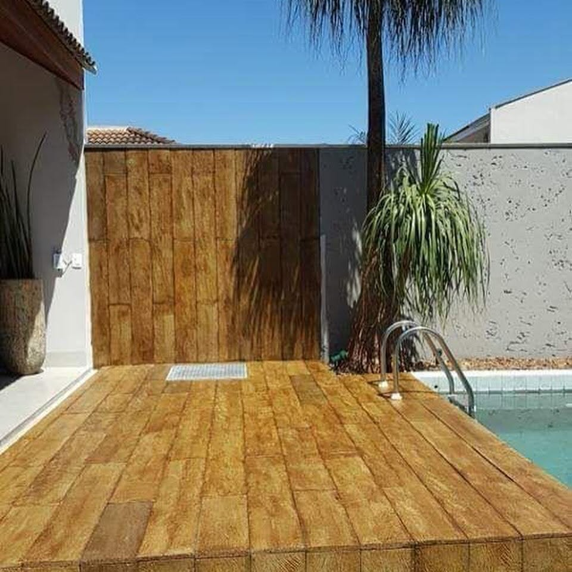
Textura, ritmo e profundidade para destacar muros, paredes e áreas próximas à piscina.
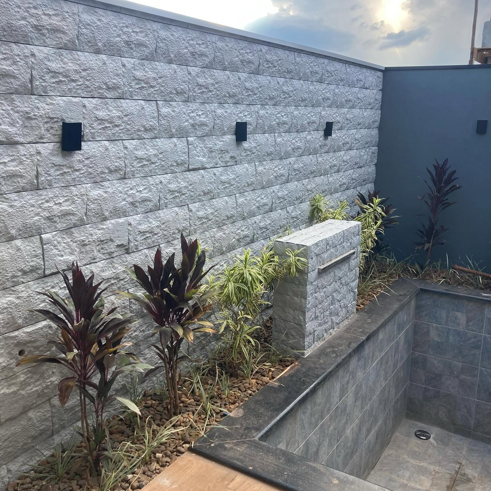
Acabamentos com leitura mineral que mudam completamente a percepção de uma parede.
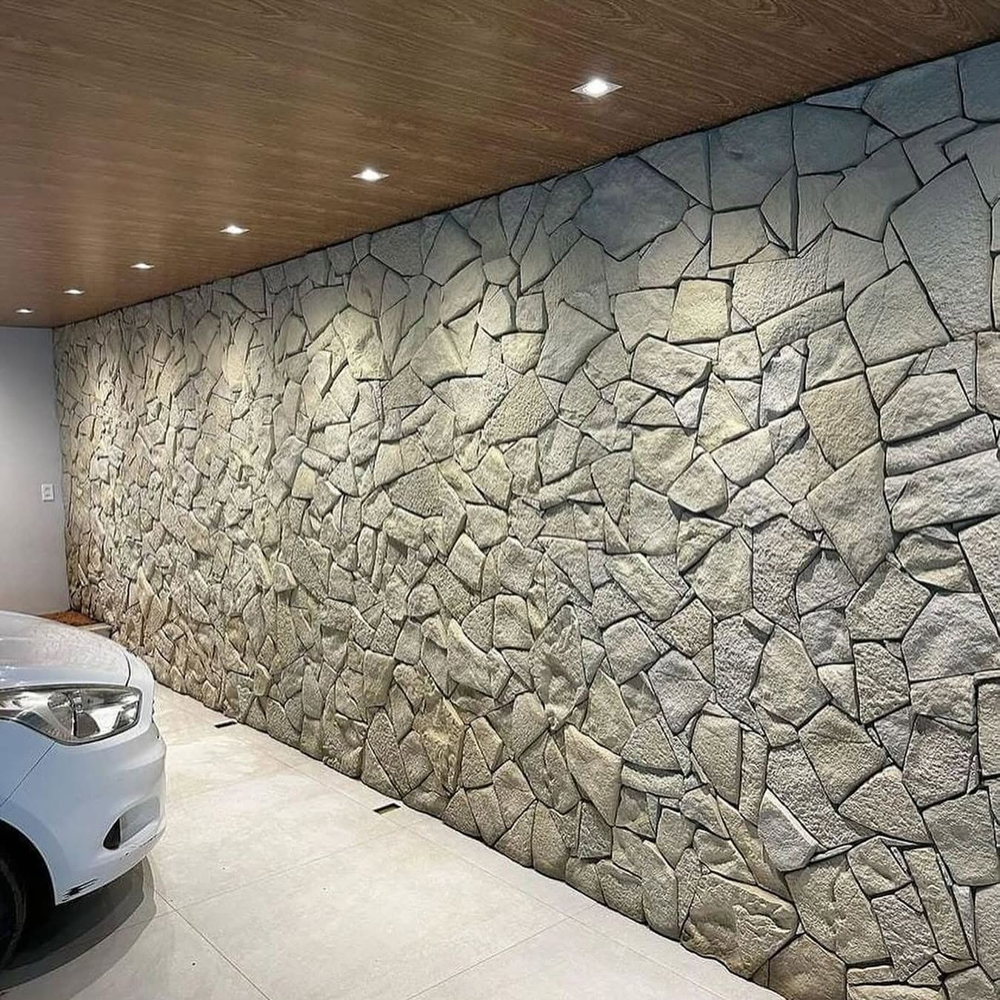
Geometrias que ganham outra leitura quando luz e sombra passam a fazer parte do acabamento.
O detalhe certo pode ligar arquitetura, paisagismo e piscina sem competir com o restante do espaço.
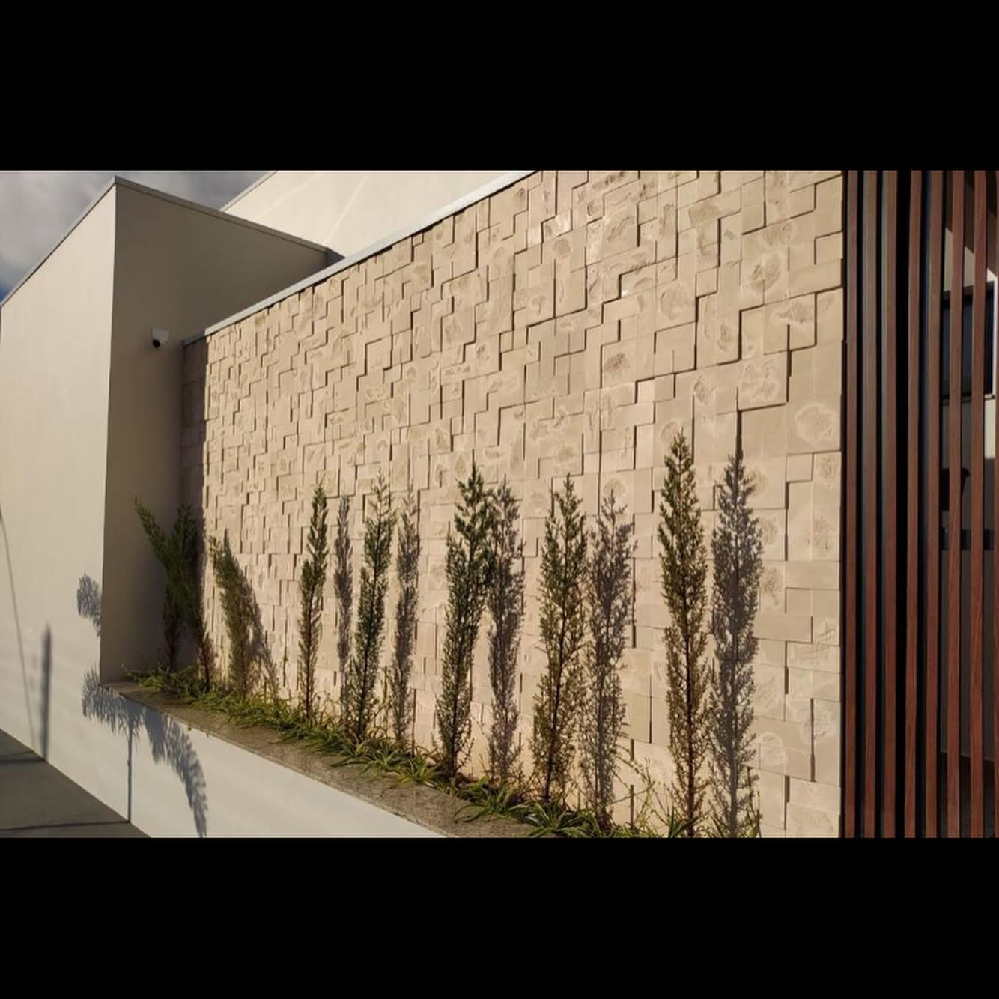
Quer combinar piscina e acabamento no mesmo projeto?
Conversar sobre meu espaço ↗O ESPAÇO COMPLETO
Água, piso e revestimento precisam conversar. É essa combinação que faz uma área de lazer parecer pensada como um todo.
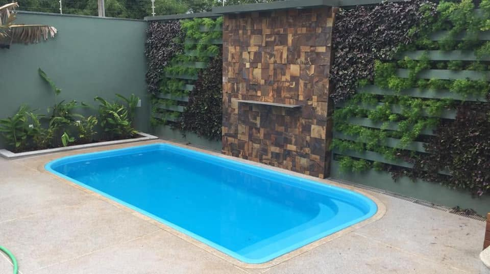
PORTFÓLIO
Filtre os registros e veja de perto piscinas, pisos, revestimentos e alguns bastidores da Tatu.
Use os filtros para explorar outros trabalhos e detalhes.
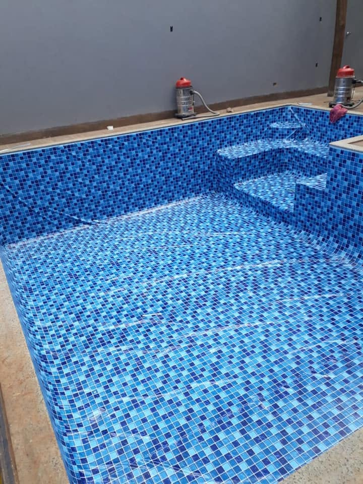
SOBRE A TATU
A Tatu Piscinas atende a partir de Dourados e reúne soluções para piscinas, pisos e revestimentos em áreas de lazer.
O site agora mostra o trabalho como ele é: projetos reais, diferentes tipos de piscina e acabamentos que ajudam a construir o ambiente completo.
COMO FUNCIONA
O primeiro passo não precisa ser técnico. Basta mostrar o que você tem em mente e onde o projeto será feito.
Envie sua cidade, fotos do espaço e uma ideia do que procura.
Piscina, piso, revestimento ou uma combinação entre eles.
A equipe orienta os próximos passos e as informações necessárias para o orçamento.
Com tudo definido, o serviço avança conforme o que foi combinado.
VEJA DE PERTO
Um registro real do trabalho em movimento — água, acabamento e ambiente vistos de perto.
Começar um projeto ↓COMECE SEU PROJETO
Escolha o que procura, informe sua cidade e o site prepara a mensagem para abrir direto no WhatsApp.
DÚVIDAS
Para medidas, disponibilidade, valores e itens inclusos, fale diretamente com a equipe.
Fibra, vinil e azulejo. A escolha depende do espaço e da proposta do projeto.
Sim. A Tatu também apresenta trabalhos com pisos, revestimentos decorativos e acabamentos voltados para áreas de lazer.
O atendimento é realizado em Mato Grosso do Sul. Informe sua cidade pelo WhatsApp para alinhar os detalhes.
Use o configurador acima ou qualquer botão de WhatsApp. Se puder, envie sua cidade, fotos do espaço e o que você pretende fazer.
Isso pode variar conforme o projeto. A equipe informa o escopo do orçamento antes da execução.
SEU PRÓXIMO PROJETO PODE COMEÇAR AQUI.